Editing, resizing and moving Labels
Contents
- Changing the length and position of labels with the mouse
- Moving a point label
- Expanding a point label
- Moving and resizing a region label
- Adjusting the junction point where two labels meet
- Moving a label when there is a selection
- Using cut, copy and paste
- Using the Context Menu
- Using the Labels Editor
Changing the length and position of labels with the mouse
You can move a label by clicking and dragging its circle handle. You can change the length of a label by clicking and dragging its triangle handle.
Holding Shift while dragging reverses this behavior, so that
For example, this lets you resize a label by holding Shift while dragging its circle handle, then release Shift to move the resized label without having to move the mouse pointer to its triangle handle. |
In the case where two labels meet you can adjust the junction point where they meet by clicking and dragging their shared circle handle.
Moving a point label
You can move a point label by clicking and dragging its circle handle:
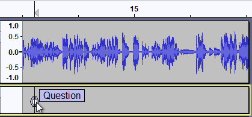 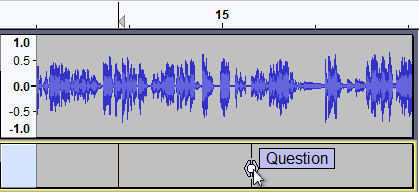 Before After
Expanding a point label
You can expand a point label into a region label by clicking and dragging either of its triangle handles:
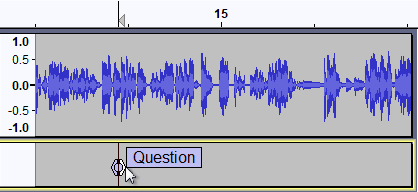 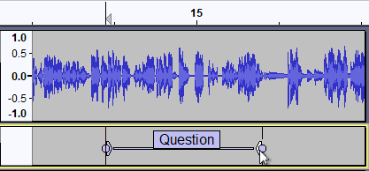 Before After
Moving and resizing a region label
You can move a region label by clicking and dragging either of its circle handles:
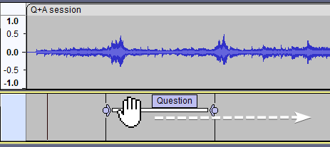 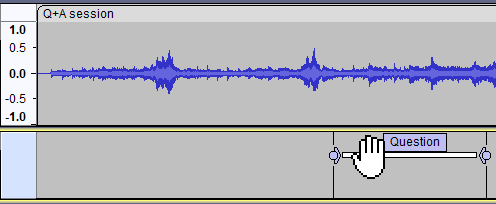 Before After
You can change the length of a region label by clicking and dragging one of its triangle handles:
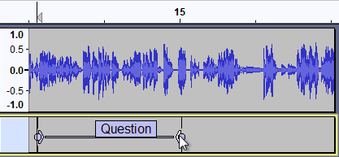 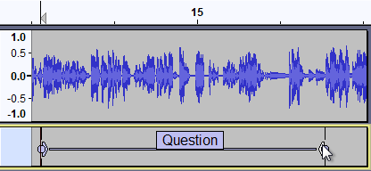 Before After
Adjusting the junction point where two labels meet
You can adjust the junction point where two labels meet by clicking and dragging their shared circle handle:
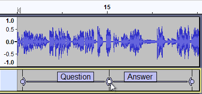 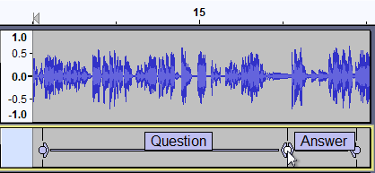 Before After
Moving a label when there is a selection
The illustration below shows what happens if you click in a label to select it, press Enter, then move the label.
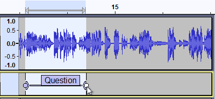 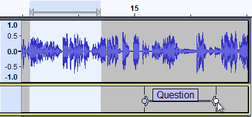 Before moving a label with a selection After moving a label with a selection
Contrast this to what happens if you click in a label to select it, then move the label.
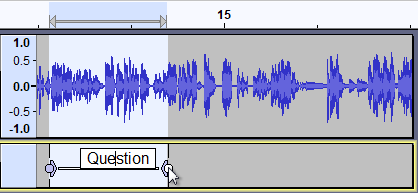 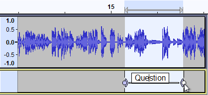 Before moving a label when the label is selected After moving a label when the label is selected
Using cut, copy and paste
Cutting and Pasting Region Labels
You can cut and paste region labels using and , but you have to make sure you do not select any audio, or you will end up cutting and pasting audio where you probably did not intend.
In the image below, the label was selected by clicking in it, then the audio track was unselected by Ctrl-clicking in the Track Control Panel's button of the audio track (this can also be done with the keyboard by Enter, Up then Enter).The label was then cut to the clipboard with :
- 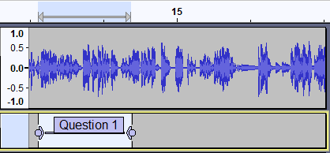
To paste the label at a different point in the audio track, either
- click in the label track at the point where you would like the label to begin, or
- click in the audio track at the point where you would like the label to begin then Shift + Down-arrow to extend the selection to the label track.
The label can then be pasted to that spot using .
- 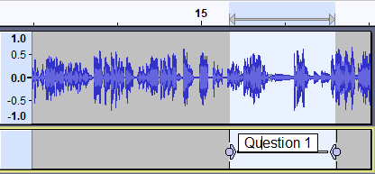
Cutting and Pasting Point Labels
To cut and paste a point label to a different location, first select the text of the label as shown below. Note the difference in appearance of selected label text (the text is highlighted separately from the box) versus a selected label (where the entire label box is highlighted).
- 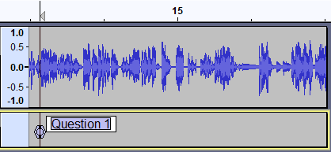
- Do (shortcut Ctrl + X) - the text of the label is cut to the clipboard, leaving a label with no text.
- Press Delete to delete the label, or right-click in the label and choose from the context menu.
- Click in the new location for the label and do .
- 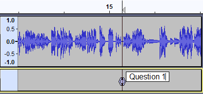
Using the Context Menu
If you right-click on a label, the label's context menu will appear:
- 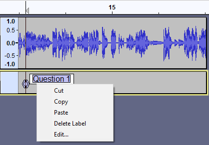
The context menu offers the following options
- Cut: - cuts any selected text in the label and place it on the clipboard
- Copy: - copies any selected text in the label and place it on the clipboard
- Paste: - pastes the contents of the clipboard to the label
- Delete Label: - deletes the entire label
- Edit: - opens the Labels Editor with just the current label
Using the Labels Editor
The Labels Editor lets you add or remove Label Tracks and edit their labels entirely using the keyboard, so is particularly useful for visually impaired users.
launches a keyboard-accessible Labels Editor. This shows all the labels at once in a tabular view, similar to a spreadsheet. Each row represents a single individual label: